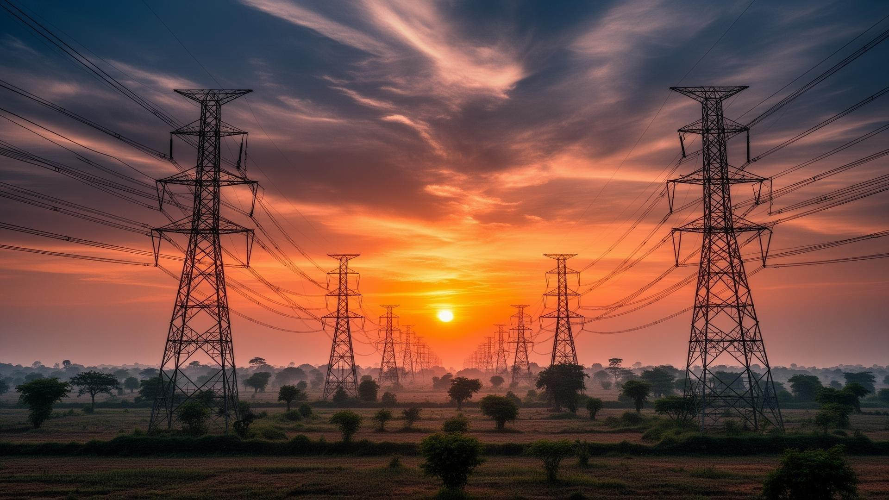

Dari kuesioner kelas, menjadi kampanye sekolah.
Mengapa proyek ini ada
Extrova adalah proyek kolaboratif Edukasi Pembangunan Berkelanjutan (ESD) siswa kelas XI PPLG, SMK Wikrama Bogor.
Kami mulai dari pertanyaan sederhana: seberapa hemat energi kebiasaan kita sehari-hari? Kuesioner diisi 636 siswa kelas XI, lalu hasilnya kami olah menjadi data, rekomendasi aksi, dan permainan agar mudah dipahami.
Tiga sudut pandang, satu kepedulian
PABP
Menghindari israf atau berlebih-lebihan adalah bagian dari tanggung jawab menjaga bumi. Menghemat listrik di lab dan kelas adalah wujud nyatanya.
KIK
Kreativitas dan inovasi dipakai untuk mengenali pemborosan energi pada perangkat sekolah dan merancang solusi yang bisa dilanjutkan.
Produktif PPLG
Sebagai calon pengembang perangkat lunak, efisiensi tidak hanya soal kode, tetapi juga pemakaian energi perangkat keras dan lab komputer.
Kelompok 8 - PPLG
Tim Pengembang (Developer)
M. Aldi Pratama P.
leader

Muhammad Chikal Nurjaman.
Anggota 1
Muhamad Johar Makarim
Anggota 2
Proyek ini dikerjakan bersama mata pelajaran PABP, KIK, MTK, Bahasa Indonesia, PP, dan Produktif PPLG di SMK Wikrama Bogor.
Sumber data: Kuesioner ENERGI XI (Perilaku), diisi 12 Oktober sampai 5 November 2026. Data yang tampil sudah diagregasi dan tidak memuat nama, NIS, maupun email responden.